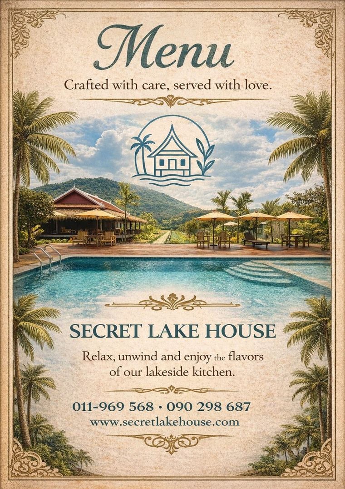
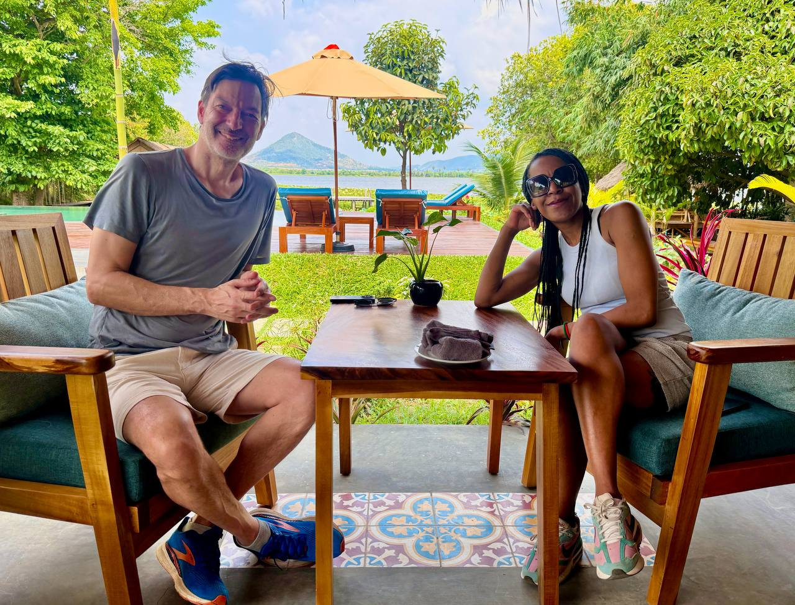
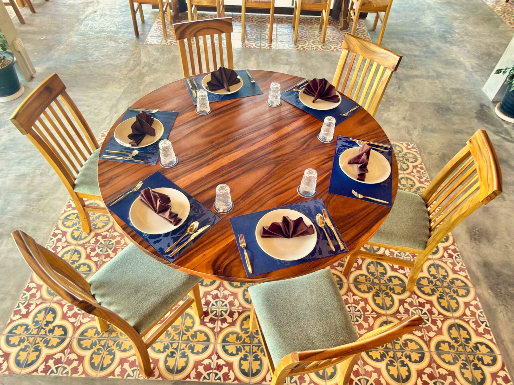
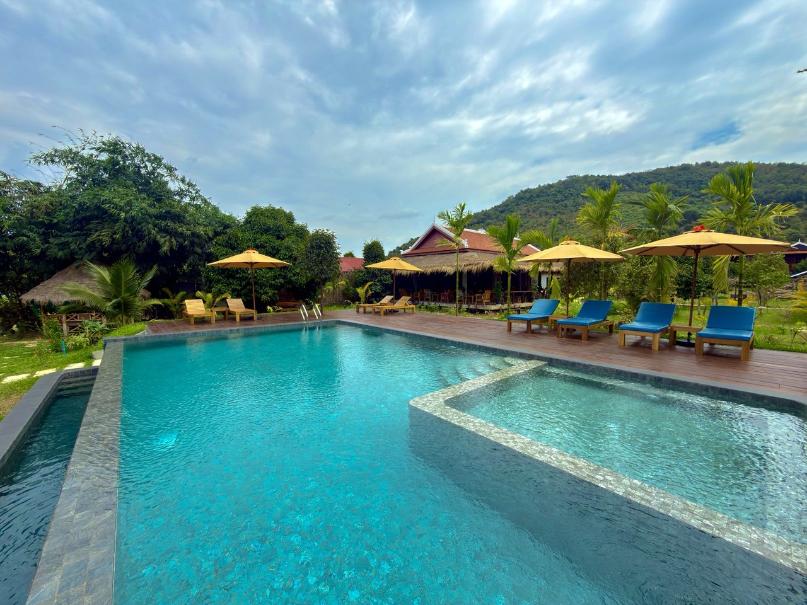
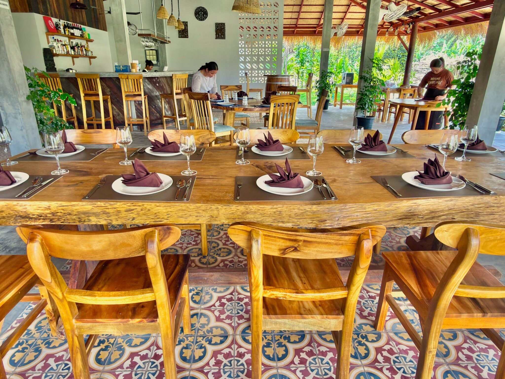
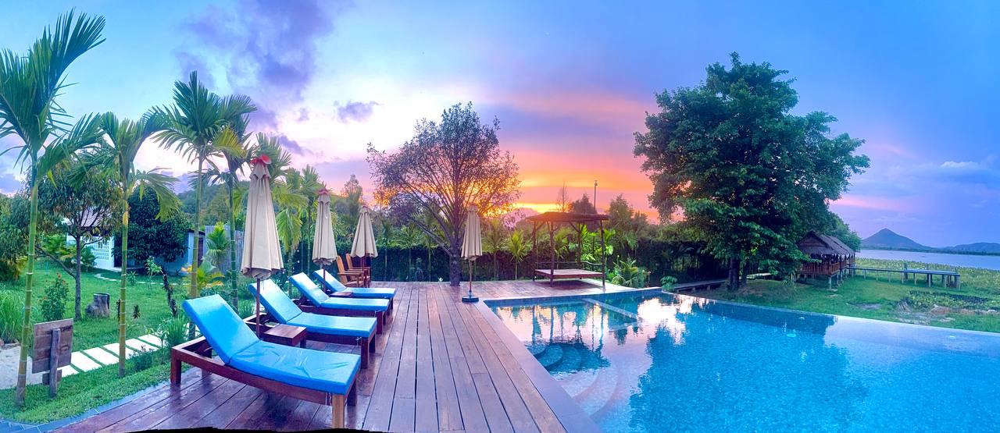

Overwater restaurant
From Organic Soil to Your Table
Dine beside the swimming pool on the lake bank, reserve one of three wooden overwater huts with grass roofs reached by a small 1.2m-wide bridge, or choose the Bamboo Hut for Khmer comfort dishes built around Kampot pepper heritage.
View our menus
Quick-loading menus for your table.
Open the optimized PDF menus in a new tab for clear viewing on phone, tablet, or desktop.
Culinary heritage
Kimlay's kitchen connects Kampot pepper farming roots with family cooking.
The restaurant sits near the swimming pool on the lake bank, relaxed and fresh for sharing after a swim, a pepper farm visit, or a quiet sunset by the lake.

Dining videos
Preview the poolside restaurant and lake setting.
See the atmosphere around the restaurant, pool, lake bank, and overwater dining huts before choosing your table.
Signature dishes
Three homepage-worthy reasons to come hungry.
Fresh Kampot Pepper Beef Loklak
Bright pepper heat, tender beef, and a local favorite prepared with care.
Fried Black Kampot Salted Pork
Crisp, savory, and perfect with lake views and cold drinks.
Khmer Beef Sour Soup
Comforting Samlor Machu with the freshness travelers remember.




Reserve direct
Best tables should never depend on a third party.
Use phone, WhatsApp, Telegram, or the menu link to reserve a poolside restaurant table, one of the three wooden huts reached by the 1.2m-wide bridge, or the Bamboo Hut before arriving.
Reserve on Telegram